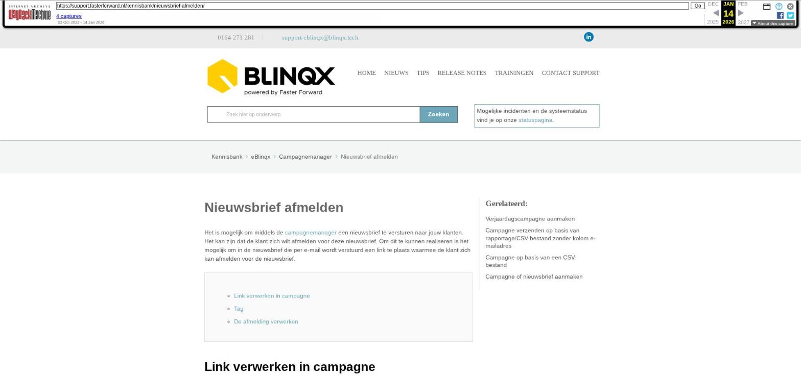

Nieuwsbrief afmelden

Tekstinhoud
Nieuwsbrief afmelden
Het is mogelijk om middels de campagnemanager een nieuwsbrief te versturen naar jouw klanten. Het kan zijn dat de klant zich wilt afmelden voor deze nieuwsbrief. Om dit te kunnen realiseren is het mogelijk om in de nieuwsbrief die per e-mail wordt verstuurd een link te plaats waarmee de klant zich kan afmelden voor de nieuwsbrief.
Link verwerken in campagne
Tag
De afmelding verwerken
Link verwerken in campagne
Zoals aangegeven kan in je de e-mail een link verwerken, waarop de klant kan klikken om zich af te melden voor de nieuwsbrief. Hieronder vind je het stappenplan hoe je de link kunt verwerken in de e-mail die middels de campagnemanager wordt verstuurd.
1. Binnen de campagne ga je naar het html-veld. Hier typ je onderaan de tekst (of waar gewenst) bijvoorbeeld het woord afmelden in
2. Dit woord selecteer je met je muis en vervolgens klik je het icoon aan om een link toe te voegen
3. Bij linktype kies je voor e-mail. Daarna vul je de velden in:
E-mailadres: het e-mailadres waarnaar de afmeldingse-mail verstuurd moet worden
Onderwerp bericht: het onderwerp wat automatisch mee wordt gestuurd
Inhoud bericht: de inhoud van de e-mail wat automatisch mee wordt gestuurd
Opslaan met de OK knop
Tag
Het is ook mogelijk om een tag te maken. Deze tag kan dan door middel van het insert tags icoon toegevoegd worden aan de tekst, zodat niet iedere keer alle bovengenoemde stappen met betrekking tot de link verwerken in de tekst genomen hoeven te worden. Indien je gebruik wilt maken van de tag stuur dan een e-mail naar support-eblinqx@blinqx.tech en vermeld hierin naar welk e-mailadres de e-mail verzonden moet worden en wat de inhoud moet zijn van het onderwerp en het bericht.
Let op: zowel de link die je handmatig aanmaakt in de tekst en de tag moeten bij iedere campagne handmatig toegevoegd worden. Het is niet mogelijk om deze standaard/automatisch in het htmlveld te zetten.
De afmelding verwerken
Let op: indien een klant zich afmeldt voor de nieuwsbrief dan moeten er nog handmatige stappen genomen worden om in eBlinqx kenbaar te maken dat de klant zich heeft afgemeld. Binnen de campagne maak je gebruik van een rapportage waarin de kolom CRM acties aanwezig is. Middels een persoonlijke selectie filter je de klanten eruit die als actie nieuwsbrief afgemeld hebben. In het dossier moet de klant dus de actie nieuwsbrief afgemeld krijgen, indien hij op de link afmelden heeft geklikt. Hoe werkt dit:
In de campagne verwerk je een link, waarop de klant kan klikken om zich af te melden voor de nieuwsbrief (zie Link verwerken in de campagne).
Nadat de klant op de link heeft geklikt, wordt er een e-mail verstuurd naar een zelfgekozen e-mailadres met daarin de melding dat de klant zich wilt afmelden
Middels CRM acties kan je aangeven of een klant een nieuwsbrief wilt ontvangen. Je gaat naar het betreffende klantdossier – startpagina – CRM
Ga hier naar CRM acties dossier en voeg door middel van het +icoon het kenmerk Nieuwsbrief afgemeld toe
Het kenmerk Nieuwsbrief verwijder je door middel van het rode kruisje
Laatste update: 15 oktober 2025
Was deze informatie nuttig?
Ja Nee